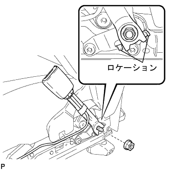
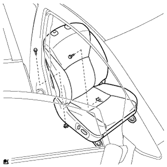
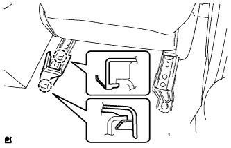
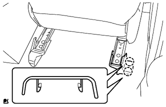

Front Seat Inner Belt Assembly RH Installation |
| 1. Install Front Seat Inner Belt Assembly RH (w/ Power Seat) |
 |
Install the front seat inner belt assembly RH with the nut.
Engage each clamp and connect the connector.
| 2. Install Front Seat Inner Belt Assembly RH (w/ Manual Seat) |
 |
Install the front seat inner belt assembly RH with the nut.
Engage each clamp and connect the connector.
| 3. Install Front Seat Assembly RH (w/ Power Seat) |
Place the front seat assembly RH in the vehicle, and align the adjuster pins with the holes on the vehicle side.
Connect the connectors.
Connect the battery negative terminal.
Operate the power seat switch knob (for slide & vertical) to move the front seat assembly RH to the rearmost position.
 |
Temporarily install the front side of the front seat assembly RH with the 2 bolts.
Operate the power seat switch knob (for slide & vertical) to move the front seat assembly RH to the frontmost position.
 |
Temporarily install the rear side of the front seat assembly RH with the 2 bolts.
Tighten the 2 rear side bolts of the front seat assembly RH in the order of inner → outer.
Operate the power seat switch knob (for slide & vertical) to move the front seat assembly RH to the rearmost position.
Tighten the 2 front side bolts of the front seat assembly RH.
Operate the power seat switch knob (for slide & vertical) to move the front seat assembly RH to the frontmost position.
| 4. Install Front Seat Assembly RH (w/ Manual Seat) |
Place the front seat assembly RH in the vehicle, and align the adjuster pins with the holes on the vehicle side.
Operate the seat track handle to move the front seat assembly RH to the rearmost position.
 |
Temporarily install the front side of the front seat assembly RH with the 2 bolts.
Operate the seat track handle to move the front seat assembly RH to the frontmost position.
 |
Temporarily install the rear side of the front seat assembly RH with the 2 bolts.
Tighten the 2 rear side bolts of the front seat assembly RH in the order of inner → outer.
Operate the seat track handle to move the front seat assembly RH to the rearmost position.
Tighten the 2 front side bolts of the front seat assembly RH.
Connect the connectors.
| 5. Inspect Slide Adjuster Lock Synchronization (w/ Manual Seat) |
Check that the left and right adjusters lock at the same time when the seat is slid.
If the slide is not synchronized, loosen the seat set bolts and adjust.
| 6. Install Seat Track Bracket Cover Inner RH (w/ Power Seat) |
 |
Engage the 2 claws to install the seat track bracket cover inner RH.
| 7. Install Seat Track Bracket Cover Inner RH (w/ Manual Seat) |
Operate the seat track handle to move the front seat assembly RH to the frontmost position.
 |
Insert the guide
Engage the claws to install the seat track bracket cover inner RH.
| 8. Install Seat Track Cover Outer RH (w/ Power Seat) |
 |
Engage the 2 claws to install the seat track bracket cover outer RH.
| 9. Install Seat Track Cover Outer RH (w/ Manual Seat) |
 |
Engage the 2 claws to install the seat track cover outer RH.
| 10. Install Seat Track Bracket Cover Inner Front RH (w/ Power Seat) |
Operate the power seat switch knob (for slide & vertical) to move the front seat assembly RH to the rearmost position.
 |
Engage the 3 claws to install the seat track bracket cover inner front RH.
| 11. Install Seat Track Bracket Cover Inner Front RH (w/ Manual Seat) |
Operate the seat track handle to move the front seat assembly RH to the rearmost position.
 |
Engage the 3 claws to install the seat track bracket cover inner front RH.
| 12. Install Seat Track Bracket Cover Outer Front RH (w/ Power Seat) |
 |
Engage the 3 claws to install the seat track bracket cover outer front RH.
| 13. Install Seat Track Bracket Cover Outer Front RH (w/ Manual Seat) |
 |
Engage the 3 claws to install the seat track bracket cover outer front RH.
| 14. Inspect Power Seat Operation (w/ Power Seat) |
Check that each adjustment function (slide, front vertical, rear lifter, reclining) operates when each power seat switch is operated.
| 15. Install Front Seat Headrest Assembly |
| 16. Connect Battery Negative Terminal |
| 17. Inspect Seat Belt Function |
)| 18. Inspect Airbag Warning Light |
 |
Check that the warning light comes on when the IG is turned ON.
Check that the warning light goes off approximately 6 seconds after the IG is turned ON.
| 19. Setting Procedure When Disconnecting/Reconnecting Battery Terminal |
)